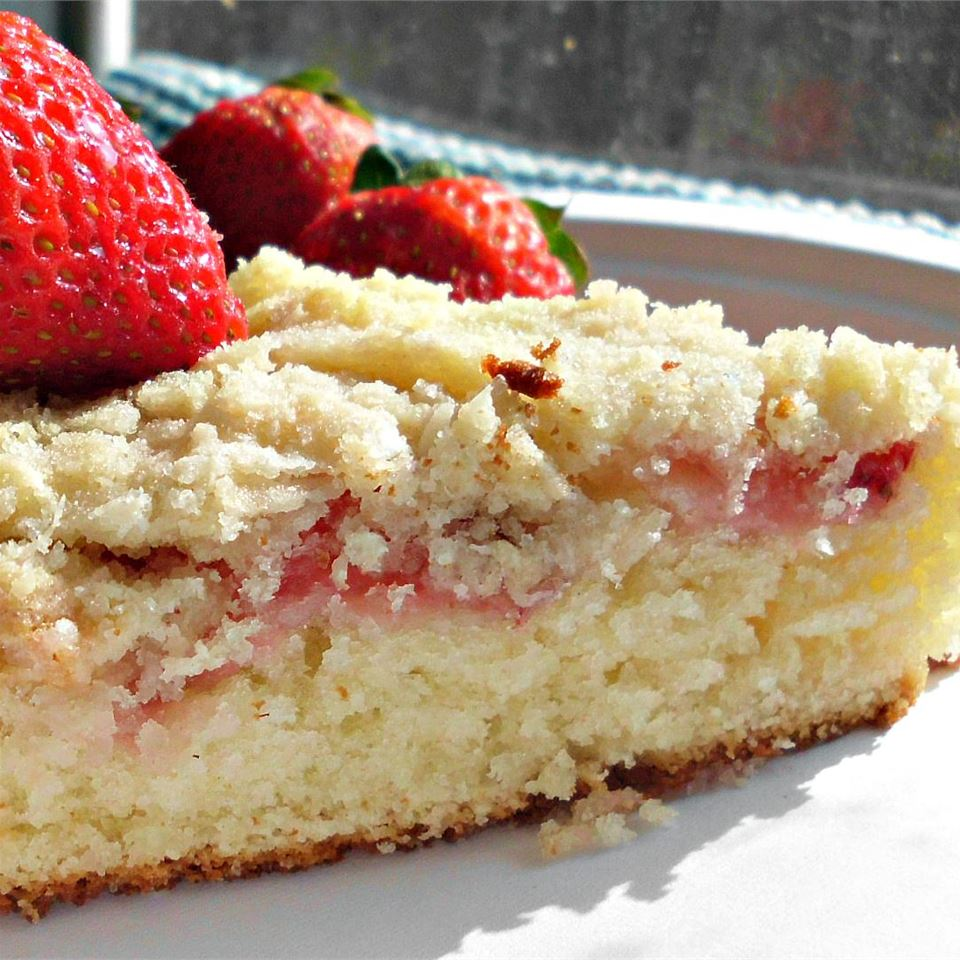

Fresh Strawberry Coffee Cake

Description
Wonderful white coffee cake is topped with fresh strawberry and crumb topping.
Ingredients
- ¼ cup butter
- ¾ cup white sugar
- 1 egg
- 1 ½ cups all-purpose flour
- 2 teaspoons baking powder
- 1 teaspoon salt
- ½ cup milk
- 1 ½ cups thinly sliced strawberries
- ½ cup all-purpose flour
- ½ cup white sugar
- ¼ cup butter, softened
- ¼ cup flaked coconut
Directions
- Preheat oven to 350 degrees F (175 degrees C). Grease a 9-inch baking pan.
- Beat 1/4 cup butter in a bowl until creamy; add 3/4 cup sugar and egg. Beat until fully incorporated.
- Mix 1 1/2 cup flour, baking powder, and salt together in a separate bowl. Stir flour mixture, alternating with milk, into butter mixture until combined. Pour batter into prepared baking pan. Arrange strawberries atop the batter.
- Mix 1/2 cup flour, 1/2 cup sugar, 1/4 cup butter, and coconut together in a bowl. Sprinkle topping over strawberries.
- Bake in the preheated oven until a toothpick inserted in the center of the cake comes out clean, about 35 minutes.